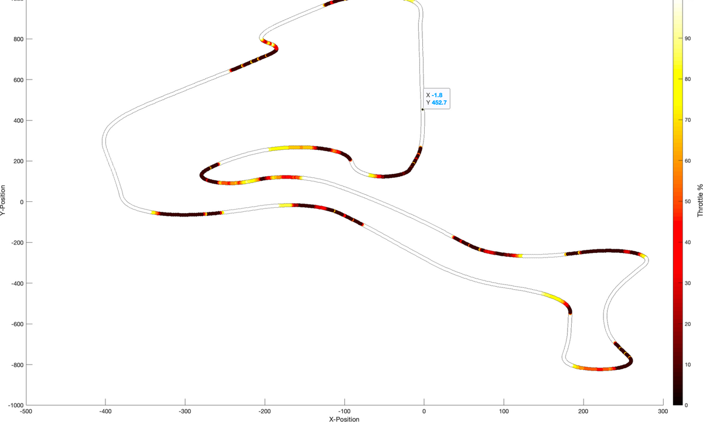

Telemetry maps and driver coaching
I wanted drivers and engineers to see where on the track time was being won and lost, rather than reading it off a column of numbers.
- 5.8 s
- lap time gained by the slower driver
- 1:10.623 → 1:04.832
- lap time before and after coaching
I wrote MATLAB scripts that turn logged throttle, brake, gear, ride height and roll and yaw rates into heat maps drawn on the track outline. I first checked the tool on FS Sim Series data, comparing a generic setup with an updated one. The maps here are from that check.
I then ran the same tool on the car's LifeRacing ECU data. Overlaying two drivers showed where the slower one was losing time and where to brake and change up. Their lap came down from 1:10.623 to 1:04.832.
